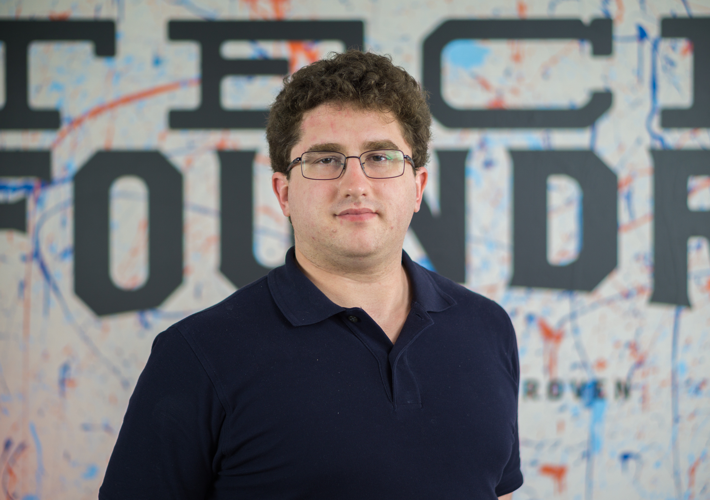

Patrick J. Kelley
Address: 452 River Drive, Hadley, MA 01035 Phone: 413-265-9528 E-mail:eluvatar1@gmail.com Linkedin:Patrick Kelley
Qualifications and Professional Skills:
- Well-developed team and leadership skills
- Excellent written and verbal communication skills
- Positive attitude and ability to work under pressure
- Ability to handle multiple tasks
Education:
TECH FOUNDRY,
Springfield, Massachusetts 2017
UNIVERSITY OF RHODE ISLAND, BA,
Kingston, Rhode Island 2013
- Major: English and Journalism
- URI Honors Program 2009
- URI Dean's List 2012
ROCK POINT HIGH SCHOOL,
Burlington, Vermont 2008
Experience:
FORBES LIBRARY 2015 to 2016
Library
Team Member
- Responsible for returning books to shelves and maintaining an organized inventory.
WBUR 2013
National Public Radio Station
Intern
- I performed research, wrote hourly news bulletins, and went on scene as a reporter. Took recordings and processed audio clips.
RAMBLINGS MAGAZINE, 5 CENT CIGAR
College Publications, University of Rhode Island 2011 to 2013
Reporter
- I helped found the new magazine Ramblings. For both I did research, conducted interviews, and took photographs.
ROBERT L. CAROTHERS LIBRARY
Library, University of Rhode Island 2011 to 2013
Team Member
- Responsible for returning books to shelves and maintaining an organized inventory.
VALLEY ADVOCATE and LONGMEADOW NEWS
News Publications, Pioneer Valley and Longmeadow 2012
Internships
- I conducted research, reviewed music, and previewed upcoming events in the Pioneer Valley. In pursuit of my assignments I also conducted interviews and took photos.
Honors
Eagle Scout, 2008